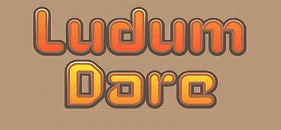

Aug 27, 2012 · 3 minute read · Comments
Games development

Ludum Dare #24 is over after an exhausting crazy weekend but, above all, it´s been a ton of fun. Joining the Dare has proven to be an excellent idea and I believe it"d be right to say it’s has not gone too bad after all, considering it was my first time. Here’s a little postmortem on the experience.
Evolution – The survival of the fittest
The competition’s theme was Evolution so I went for a classic 2D platformer starred by a funny caveman who has to get through the level while killing dinosaurs by jumping on them or throwing rocks which he collects himself. Yes, I"m aware I"m not going to get many points for sticking to the theme.
Evolution is written in Java using the wonderful libgdx framework and my personal code base (which I made available prior to the Dare).

What went right
- Completion: I guess having delivered something at my first attempt it’s a win, even though the game lacks in many aspects. Time management was not completely disastrous.
- Graphics: Evolution has received very positive feedback art wise and being a programmer it feels a bit bizarre. The process followed to create and animate character was: sketching on paper, vectorizing and colouring with Inkscape, animation with Flash and Texture Packer to produce spritesheets. I"ll keep working on this line.
- Multi platform: libgdx was a good decision, not only is a very nice and powerful framework but also allows to target several platforms with no to very little effort.
- Box2D: using this popular physics engine empowered me to implement the basic movement through the level extremely quickly.
- Code base: although I discovered a fair amount of bugs in my code base, it behaved quite nicely. I also got a ton of ideas to improve it.

What went wrong
- Gameplay polish: I didn’t invest enough time to polish the gameplay, tweak values and play test the game and that reflects on the final build. It’s a noob mistake and that makes me sad.
- Content: I decided to invest the last moments of the competition in the little polishing I did instead of content creation which resulted in having just one level. However, I think it was the right call, I simply didn’t have time for everything.
- Asset pipeline: too much time was wasted in getting the export process right for some of the assets. On the bright side, I’ve learnt a lot and it won’t happen next time.
- HTML5 port: it would have been awesome to have a browser version of my game with no third party plugins requirements so people could just play. Too bad my HTML5 port had a bad crash.

Conclusions
I can’t stress enough how awesome of an experience it was. So many emotions mixed in the pot: stress, joy, thrill, exhaustion and so many more. I learned so much and felt great for having been able to deliver something in such a short timespan. I will definitely try to be in next time.
Looking forward to get more feedback during the voting phase, best of luck to all my fellow Ludum Darers!
Aug 23, 2012 · 1 minute read · Comments
Games development

This weekend I"ll be joining Ludum Dare #24, the crazy 48h solo game making online competition. Pick the tools of your choice but everything has to be made from scratch, and according to a theme selected by the community through strict democracy. Last edition got over 1000 submissions, so it looks really promising. I"m gathering with a couple of friends from work in some sort of LAN game jamming party and there will be food aplenty, fun times.
As I posted on the official Ludum Dare blog, I"ll be using:
- Language: Java using Eclipse as IDE.
- Libraries: libgdx and my personal code base.
- Graphics: Inkscape, Photoshop and Spriter (maybe).
- Audio: sfxr and Audacity.
I honestly don’t know what’s gonna come out of this and I"d be happy just to deliver something minimally playable by Sunday night. The plan is implementing every gameplay element with placeholders, then produce some mediocre art and finally polish whatever piece of rubbish entertainment experienced I"d have created.
Like I said, at least it"ll be fun and I"m looking forward to test my work in progress framework in an almost real situation.
I shall keep you posted!
Jun 23, 2012 · 2 minute read · Comments
Hobbies

It’s the sum total of every expressive media of all times made interactive, how is that not awesome!
I recently watched with a few friends Indie Game: The Movie, a documentary that shows the development process of a few independent small budget games and what drives their authors to work in such a competitive industry. I was fairly excited about watching it since the trailer highlighted some of the reasons I chose this career path. However, bare in mind that all that glitters is not gold.
Indie Game features three well known independent games being Super Meat Boy, Braid and Fez. Their developers have proven themselves to be talented, creative people who took a ridiculously huge risk in order to do what they"re truly passionate about: video games. That is definitely worth respect. However, I feel the necessity to point out the fact that not every game developer in the world is as those shown in the documentary.
They are generally normal, non tormented, cheerful people who don’t have problems to socialize over a couple of beers. Most of them, actually, love beer. It’s important to remark the line between medium/big studios where the mere commoners do not take the financial risk and the two people company who basically bet their future on its success. I"d also be pretty stressed about it. Indie Game: The Movie is exclusively about the latter.
What’s good about this film is how it shows the passion and love these developers feel about what they do. You learn that, despite all the extenuating and brain melting crunching hours, the outcome of people having fun and experiencing all kinds of feelings with something you’ve created is amazing. Of course there’s also some people who like to play the misunderstood bohemian artist role, if you saw it already, you know what I"m talking about [cough] Braid! [/cough].
Forget about my negative comments, Indie Game: The Movie is definitely worth a watch for several reasons. To know more about the making of a video game and to understand why their authors are so excited about them could be two good examples. Furthermore, it’s very well put together, reasonably cheap ($10), comes completely DRM free, allows streaming, 1080p download version and includes subtitles.
Apr 30, 2012 · 1 minute read · Comments
Games development

A few months ago I developed Urban Race, a very simple (and quite lame) time attack racing game using XNA. It was a University project so I couldn’t release the source until it was graded but then, I totally forgot about it. Recently, a reader asked me to publish the source and here we are. Please, bare in mind it’s for educational purposes, it was developed in one month without previous knowledge of neither C# or XNA and it’s not intended to be a fully playable product.
I usually document my projects with Doxygen and several articles or tutorials, this time has been different. At least I’ve uploaded a PDF file with the documentation I submitted for my project to be graded. You"ll have to excuse me for lack of further and more accessible documentation but I don’t have much time now and, prior to this moment, I didn’t think this game was worth making public.
Anyways, you can freely access the source, reuse components and re-share. Bare in mind that the code is under GPL v3 and the media is under Creative Commons 3.0 BY-NC so, please, stick to their conditions.
Apr 29, 2012 · 2 minute read · Comments
Games development
Warning: Libgdx now counts with localisation support, rendering this approach obsolete.
Edit: I just added UTF-8 support
Localization is a key aspect in games, specially if you want to reach a wider audience. I recently ported Freegemas to the libgdx platform and, as the original one, I wanted to ship it with multi-language support. There is no such a thing as gettext for Java and I didn’t see the Android internationalization system as a good fit in a multiplatform development. That’s why I developed my little own internationalization module.
Download LanguagesManager.java
Its usage is extremely simple, first we need a media/languages.xml file where all the strings in our project will be located. The syntax is pretty straight forward, we lay language sections identified with the code for each language. Inside every language, we provide a list of key value pairs with the localized strings.
< ?xml version="1.0" encoding="UTF-8"?>
<languages>
<language name="en_UK" >
<string key="Timetrial mode" value="Timetrial mode" />
<string key="How to play" value="How to play" />
<string key="Exit" value="Exit" />
</language>
<language name="es_ES" >
<string key="Timetrial mode" value="Contrarreloj" />
<string key="How to play" value="Ayuda" />
<string key="Exit" value="Salir" />
</language>
</languages>
We can retrieve localized strings in our project through the LanguagesManager class and its getString() method. It’s been implemented using the Singleton design pattern as we only need one instance accessible from, potentially, everywhere in the code. When we ask our manager for a certain string we will use its key, if it finds it within the current language, it"ll return it, otherwise it"ll return the key itself. That’s why using strings in a base language (English) as keys can be a good idea, those will be returned by default.
For now, it uses lazy initialization which means it"ll load the language the first time the getInstance() method is called but that might change in the future. It automatically detects the system language (no matter if we are on Android or a desktop environment) and it fallsback to English if the system language is not among the available ones in the data/languages.xml file. However, you can explicitly specify the language you want to load through the loadLanguage() method.
LanguagesManager lang;
lang = LanguagesManager.getInstance();
String option1 = lang.getString("Timetrial mode");
String option2 = lang.getString("How to play");
String option3 = lang.getString("Exit");
Freegemas libgdx is open source (GPL v3) as is this internationalization module which means you"re more than welcome to download it, use it and improve it. If you do the latest, make sure you distribute it the same way as me.